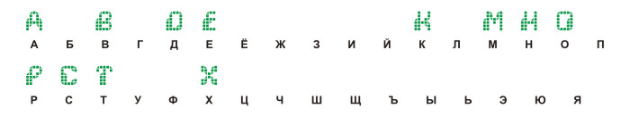
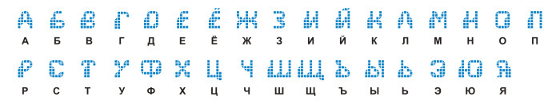

Создание кириллических букв на основе латиницы
Не секрет, что кириллических шрифтов во много раз меньше чем шрифтов представленных латиницей. И порой бывает, что понравившегося шрифта “по-нашему” просто не существует. А нужно в таком шрифте написать всего пару слов для заглавия. Что делать? Ждать пока переведут? Придётся помочь себе самому.
Берём исходный шрифт. В данном случае это Wargames.
К счастью, различий в азбуках не так много.
Зелёным цветом выделены буквы безусловно подходящие для использования.
Оранжевым - для русских текстов бесполезные.
И синим - те над которыми придётся потрудиться. (В конце алфавита добавлены “тройка” и “четвёрка”, которые станет соответственно буквами “З” и “Ч”. Благо в этом шрифте цифры тоже исполнены “в стиле”, что, увы, бывает не всегда.)
Для начала расставим в правильном порядке то, что имеем:

Пробелов вроде бы много. Но не всё так грустно. Начнём с самого простого.
Буквы “Г”, “Ь”, “Ъ”, “Ы”, “Я”
Латинская “L” простым нажатием на кнопку зеркального отражения превращается в родную “Г”.
Хотя данный шрифт требует небольшого напряга и с этой буквой. Как видим декоративные “наплывы” на буквах располагаются слева внизу. Поэтому “разбиваем” объект на составляющие (жмём одновременно Ctrl и K). И сгруппировав нужные фрагменты (Ctrl+G), отзеркаливаем их так как нужно. Готовую букву собираем в единое целое (жмём Weld)
Точно так же “Р” превращается в мягкий и твёрдый знаки. Мягкий знак, в свою очередь, соединившись с “I”, становится названием известной операции :)

R” повернувшись преобразуется в «Я».
Хотя с этой буквой не всегда проходит быстро и гладко. В показанном ниже случае пришлось произвести несколько дополнительных действий. Так как в этом шрифте правые ножки букв ниже левых, то отзеркаленная “R” превратилась в “нестандарт”. Дабы исправить положение была создана зеркальная копия буквы. У обоих объектов были удалены места нестыковки со стандартом, а затем, выровняв фрагменты по правому краю, при помощи Weld`a создал правильную литеру “Я”.
Буква “И”
Латинская “N” с помощью тех же манипуляций становится “И”. Добавив “птичку” решаем проблему отсутствия “И краткого”.
Буква “У”
“Игрек” легкой сдвижкой “ножки” влево трансформируется в “У”.
Буква “Б”
В данном шрифте переделка латинской “В” в нашу “Б” не представляла никакого труда. Достаточно было лишь удалить лишнее.
С другими шрифтами эта операция занимает несколько больше времени. Например:
Здесь потребовались работа ластиком и последующая доводка до ума по точкам.
Буквы “Л”, “П”, “Ю”, “Э”
Удалив перемычку у “А” получаем “Л” Приподняв перемычку у “Н” имеем “П”.
Перемычку литеры “Н” нужно скопировать. Соединив её с “О” и “I” откладываем в кучку готовой продукции букву “Ю”. Ещё раз воспользовавшись “энной” перемычкой и зеркальной копией “С” создаём “Э”.
Переходим к самому интересному.
Буквы “Ш”, “Щ”, “Ц”
Воспользуемся изготовленной нами же буквой “П”. Перевернув её “вверх ногами” (не забывая про особенности шрифта) создаём ейный клон. Обрезав у клона лишнее объёдиняем два объекта в одну “Ш”. Добавляем букве “хвостик” - “Щ” готова. Отрезав половинку “Щ” (обычно это делается при помощи инструмента “стирательная резинка” (Eraser) оставляем на складе готовую «Ц».
Для “хвостиков” обычно подходит “L”. Её достаточно повернуь и уменьшить в размере.
И, наконец, “высший пилотаж” - буквы “Ж” и “Ф”
“Ж” хоть и состоит из двух зеркально отражённых “К”, не так проста как может показаться.
Впрочем, если речь идёт о шрифтах типа “Ariel” и с прямым (без наклона) начертанием букв, то там действительно всё элементарно. Создал зеркальную копию. Подогнал друг к другу, чтобы прямые ножки чётко наложились одна на другую (Не забыть, для удобства, включить привязку к направляющим. И уже по направляющим подгонять объекты). И сделал слияние в один объект.
Сложность создания “Ж” скорее художественного плана. Какая ножка должна быь толще? Насколько широкой должна быть буква? Ведь есть изначально широкие фонты. А про создание буквы из шрифтов типа “Одессы” или “Каллиграфа” можно написать отдельный урок :) (Тем более опыт подобной работы имеется.)
Та же история и с литерой “Ф”. В двух словах - она создаётся из “О” и “I”.
Однако «О» при этом приходится расширять и, зачастую, уменьшать по высоте. Что приводит (в случае простого растягивания) к нарушению пропорций “тела” буквы. Поэтому букву “О” приходится “разбивать на составляющие” (инструмент Break Apart; клавиши Ctrl и K). И лишь проделав манипуляции с каждой частью “О” в отдельности, восстановить литеру комбайном. Э-э... О, простите! То есть скомбинировать (инструмент Combine; клавиши Ctrl и L) обновлённую букву.
Готово. При желании можно преобразовать этот набор картинок в реальный шрифт. Но... Это тема для другого урока.

Урок не претендует на звание всеобъемлющего. Так как существуют шрифты, в которых даже переворачивание “L” доставляет немало хлопот.
P.S. В случае заинтересованности могу выложить урок по преобразованию в “Ж” любой их представленных ниже литер “К” :)
P.Р.S. И насчёт авторских прав. Чтобы не нарушать ничьих прав лучше использовать шрифты свободно распространяемые самими авторами. Таких не слишком много. Но это лучше, чем воспользовавшись каким-нибудь Оллдеем.ру нажить себе возможную кучу неприятностей . Хотя, например, в процессе этого урока было создано количественно больше букв, чем их было в исходнике. :)
Des425, я слышал, что есть такая прога, но ни разу не сталкивался. А что, в ней можно трансформировать любые фонты?
stasys, в ней можно всё что связано с созданием/редактированием шрифтов. Вот пример как она может помочь http://cdrpro.ru/news/2009-08-08-132
Sancho, понравилась твоя статья! Можешь подбросить ссылку на более подробные уроки, в нете я пытался найти, но нечего стоящего. Приходилась изучать FontLab методом тыка, а это не то!
Ни одного урока по FontLab не знаю. Не было цели вообще их искать.
Жаль!